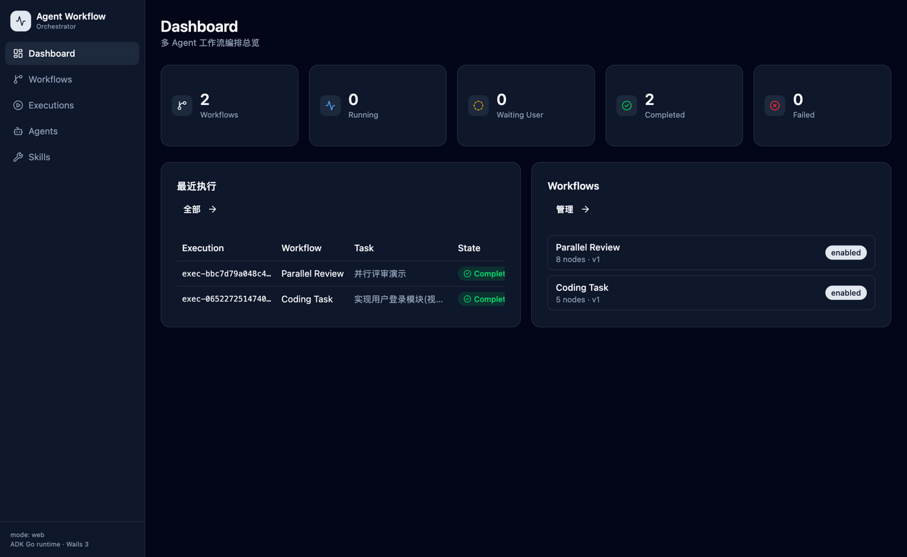
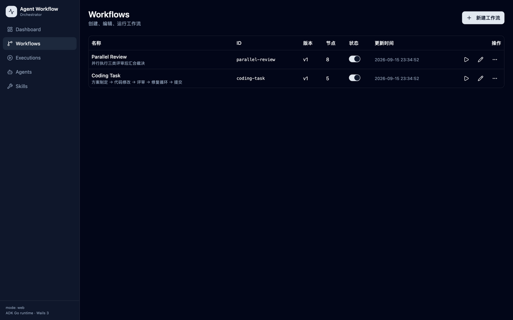
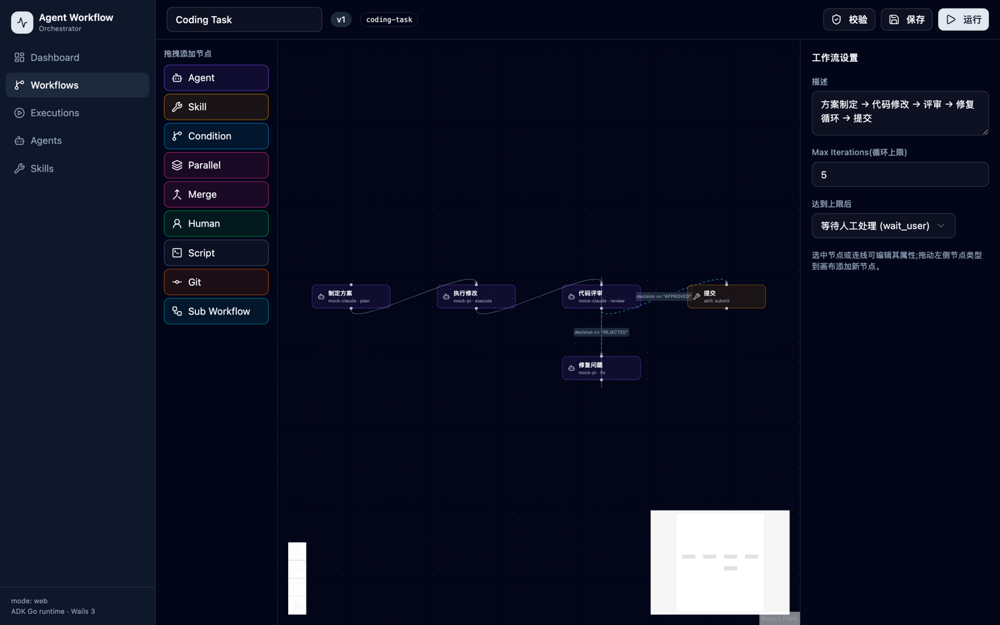
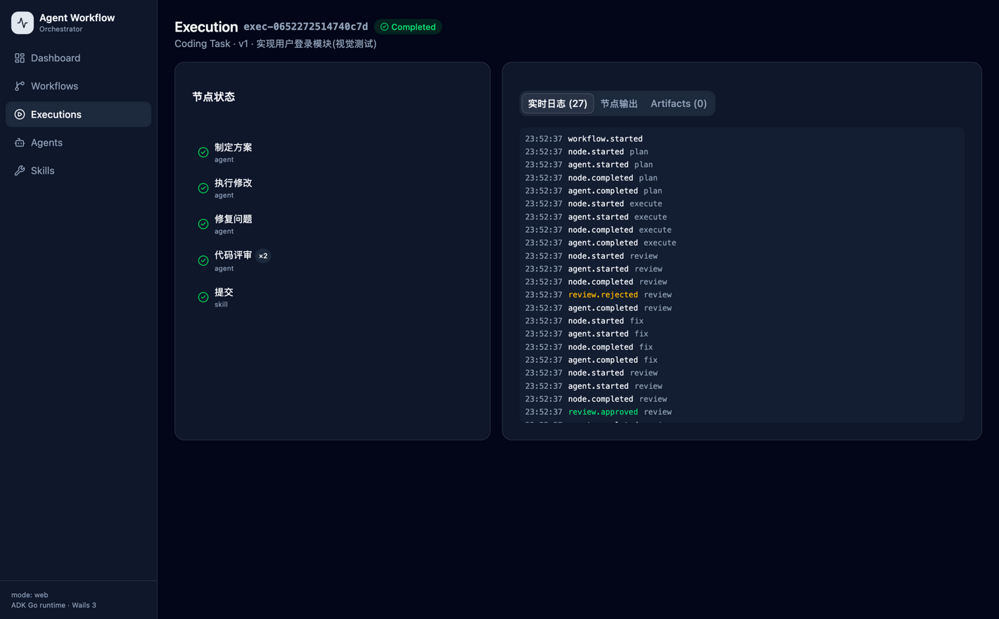
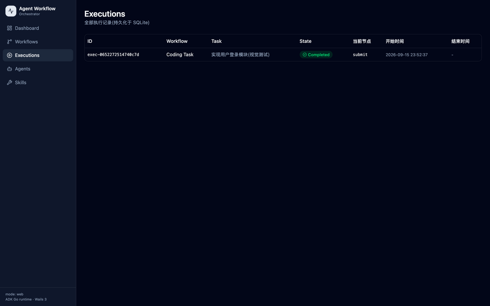
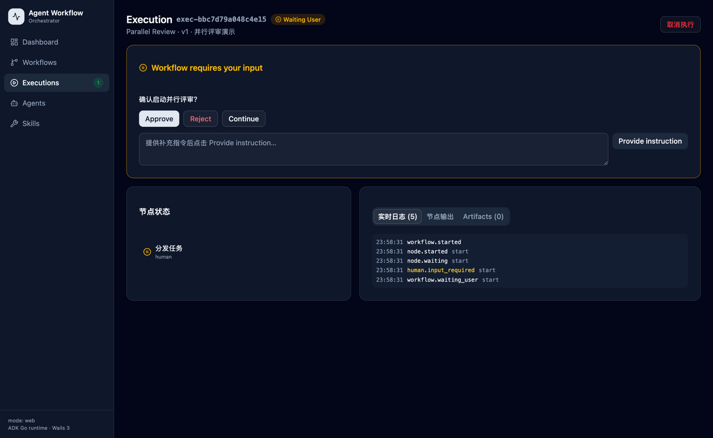
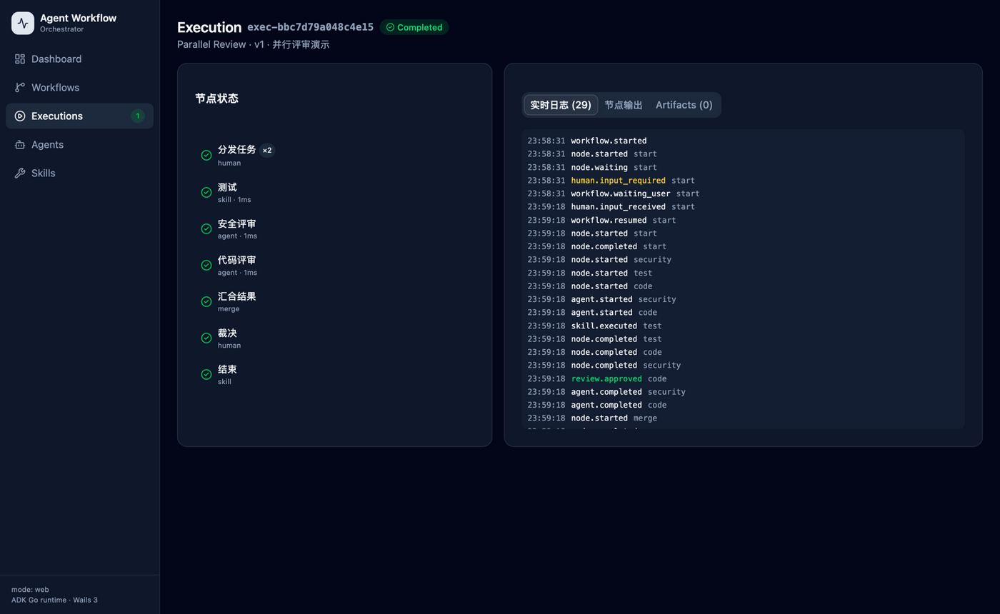
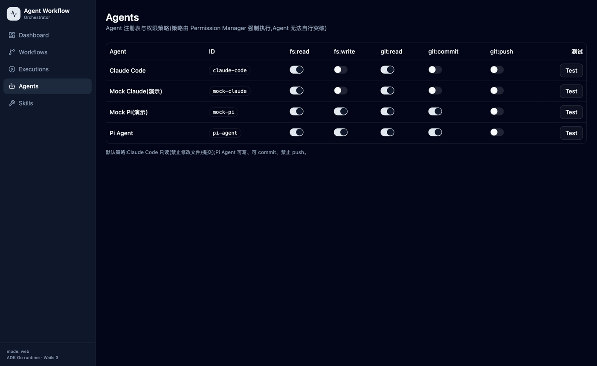
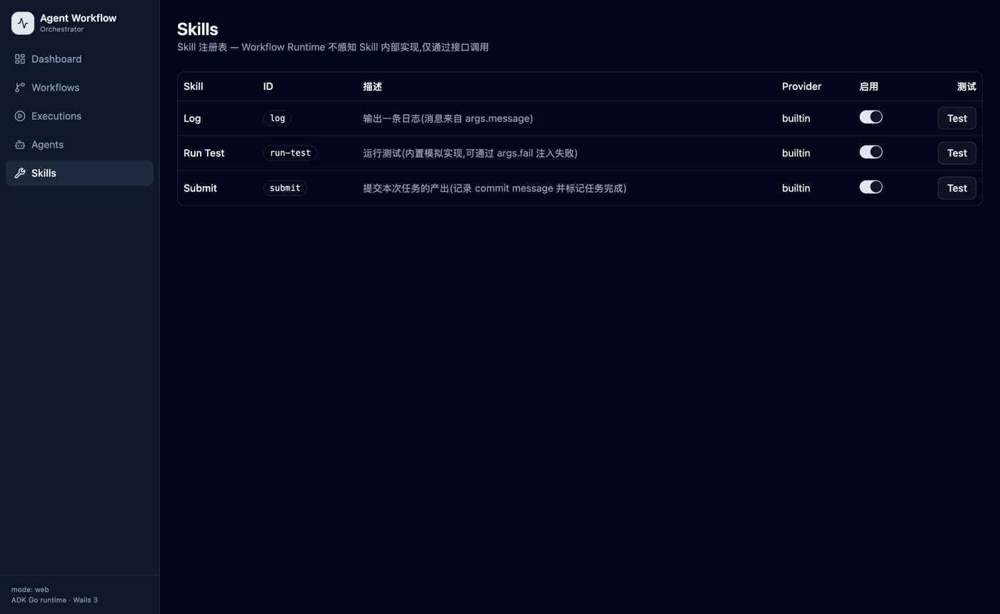

可配置 · 可视化 · 可扩展的多 Agent 工作流编排桌面应用 — 网页版使用说明
Agent Workflow Orchestrator 让你通过可视化画布编排多个外部 Agent(Claude Code、Pi Agent、Codex…或内置 Mock), 由 ADK Workflow Runtime 自动协调执行顺序、条件路由、循环修复、并行分支与人工审批。
核心原则:Agent 之间不能互相调用,所有调度必须经过 Workflow Runtime; 稳定结构编译为 ADK 顺序/并行代理,运行时决策(条件路由、循环)由 ADK 动态代理完成; Claude Code 通过权限策略 + CLI 参数双重机制默认禁止修改文件与提交。
# 1. 构建前端
cd frontend && npm install && npm run build && cd ..
# 2a. 桌面模式(Wails GUI)
go build -o bin/agent-workflow-desktop .
./bin/agent-workflow-desktop
# 2b. 服务器模式(无 GUI,浏览器访问 — 视觉测试即使用此模式)
go build -tags server -o bin/agent-workflow-server .
./bin/agent-workflow-server --server --addr 127.0.0.1:8080
# 然后浏览器打开 http://127.0.0.1:8080数据目录默认在用户配置目录(~/Library/Application Support/agent-workflow),
可用 --data 指定;首次启动自动导入 workflows/examples/ 中的两个示例工作流,
并注册 Agent(claude-code、pi-agent、mock-claude、mock-pi)与内置 Skill。
前端自动探测传输方式:桌面内嵌走 Wails IPC,浏览器走 HTTP + SSE,页面代码完全一致。

▲ Dashboard:工作流数量 / Running / Waiting User / Completed / Failed 实时统计,最近执行列表
侧栏 Executions 项上的绿色数字表示正在运行或等待人工输入的执行数,由实时事件驱动刷新(非轮询)。

▲ Workflows 列表:创建 / 编辑 / 复制 / 删除 / 启用禁用 / 运行 / 导出 YAML / 执行历史
点击右上角「新建工作流」,输入名称后自动进入 Designer 画布。
开关关闭后工作流不可运行(后端强制校验)。
把当前版本导出为配置文件,可编辑后再导入,配置即代码。
查看该工作流的全部 Execution,每条执行绑定具体工作流版本。

▲ Coding Task 示例:5 节点 + 条件边(APPROVED→提交,REJECTED→修复循环)
| 节点类型 | 关键配置 |
|---|---|
| Agent | Agent ID、Mode(plan/execute/review/fix…)、Prompt 模板(支持 {{task}} {{plan}} {{git_diff}} 等变量)、工作目录、超时 |
| Skill | Skill ID(submit / run-test / log…)、Arguments(JSON) |
| Condition | 表达式,如 decision == "APPROVED";可用变量 decision / status / output / iteration / variables.* |
| Human | 提示语 + 可选响应(approve / reject / continue / instruction) |
| Parallel / Merge | 多分支并行执行,在汇合节点合并后继续 |
| Git | status / diff / log / branch / checkout / commit(受权限策略控制) |
| Script | 本地 shell 命令(120s 超时) |
| Sub Workflow | 引用另一个工作流,阻塞执行 |
同一节点拉出多条带条件的边即构成路由;若某条分支最终又回到决策节点,
保存时编译器自动识别为循环,由 ADK LoopAgent 执行并以 settings.max_iterations 保护。
连续两轮 Review 结果相同(停滞)也会触发保护。达到上限后按设置进入
等待人工处理(wait_user) 或直接失败(fail),绝不无限执行。
保存与运行前都会校验。点击「校验」查看结构化错误(code + node + message),
点击错误条目会自动选中画布上对应的节点定位问题。校验规则涵盖:孤立节点、无效边、不存在的 Agent/Skill、
多个起点、无起始节点、不可达节点、循环无终止条件、无结束路径、非法表达式、非法 git 操作等。

▲ 执行监控:节点状态(代码评审 ×2 表示循环执行了两轮)+ 27 条实时事件日志
{{task}} 注入 Prompt)→「启动执行」。
▲ Executions 列表:全部执行记录(ID / 工作流 / 任务 / 状态 / 当前节点 / 起止时间)

▲ Human 节点或循环保护触发时:执行暂停,出现人工输入面板
当执行到 Human 节点,或循环达到上限(默认策略 wait_user)时,执行进入 WAITING_USER 状态并暂停(基于 ADK 会话状态与 Escalate 机制,非轮询)。 面板提供四个操作:
提交后通过 SSE / Wails 事件实时刷新,执行从暂停点恢复(已完成的节点自动跳过)。 下图为 Approve 后并行评审流完整跑通的最终状态:

▲ Parallel Review 全部 SUCCESS:安全评审 / 代码评审 / 测试 三分支并行后汇合

▲ Agents:统一注册表 + 权限策略矩阵(策略由 Permission Manager 强制执行)
默认权限策略体现职责分离:Claude Code 只读(禁写文件、禁 commit/push,适配器还会附加 CLI 级
--disallowedTools 双重保险);Pi Agent 可写文件、可 commit、禁止 push。
开关实时生效并持久化。Agent 通过统一接口注册,新增 Codex 等只需实现接口并注册,工作流引擎零改动。

▲ Skills:内置 submit / run-test / log,可一键 Test;Runtime 不感知 Skill 内部实现
画布只是 DSL 的可视化外衣。以下是与上面画布等价的 YAML(可在 Workflows 页导出):
version: "1"
workflow:
id: coding-task
name: Coding Task
settings:
max_iterations: 5
on_loop_limit: wait_user
nodes:
- id: plan
name: 制定方案
type: agent
agent: mock-claude
mode: plan
prompt:
template: |
你负责为以下任务制定技术方案(只分析,不修改代码):
{{task}}
- id: execute
type: agent
agent: mock-pi
mode: execute
- id: review
type: agent
agent: mock-claude
mode: review
- id: fix
type: agent
agent: mock-pi
mode: fix
- id: submit
type: skill
skill: submit
edges:
- from: plan to: execute
- from: execute to: review
- from: review
condition: decision == "APPROVED"
to: submit
- from: review
condition: decision == "REJECTED"
to: fix
- from: fix to: reviewAgent 之间不直接调用;Agent 输出必须是结构化 JSON(status / decision / summary),
路由依据 decision 字段判断,禁止字符串猜测。
├── workflow/ model · dsl · validator · compiler · runtime
├── agent/ 接口 + registry + claude/ + pi/ + mock/
├── skill/ 接口 + registry + builtin/
├── git/ contextx/ permission/ template/ event/ persistence/ logx/
├── app/application/ 应用服务层(Wails 与 HTTP 共用)
├── api/ HTTP Server 模式(REST + SSE)
├── frontend/ React + TS + Vite + shadcn/ui + React Flow
├── workflows/examples/ 示例工作流
└── docs/ 使用说明(本页)与测试报告本项目共执行 8 轮测试(≥5 轮要求),其中 7 轮为浏览器视觉测试:
后端全量单测/集成测试 → Dashboard → 列表/SPA 路由 → Designer → UI 运行+监控 → HITL+并行 → Agents/Skills → 双模式传输回归。
过程中发现并修复 5 个 Bug,每次修复独立提交 git。
详细记录见仓库 docs/TESTING.md;本页全部截图即视觉测试实证。
| 轮次 | 类型 | 结果 | 修复 |
|---|---|---|---|
| 1 | go test / vet / build 全量 | 通过 | — |
| 2 | 视觉:Dashboard | 通过 | 空列表 null 崩溃 |
| 3 | 视觉:列表 / SPA 路由 | 通过 | SPA 404 |
| 4 | 视觉:Designer | 通过 | ReactFlowProvider |
| 5 | 视觉:UI 运行 + 监控 | 通过 | — |
| 6 | 视觉:HITL + 并行 | 通过 | — |
| 7 | 视觉:Agents / Skills | 通过 | — |
| 8 | 回归:桌面/浏览器双模式 | 通过 | 传输误判 + /wails/ 路径 |